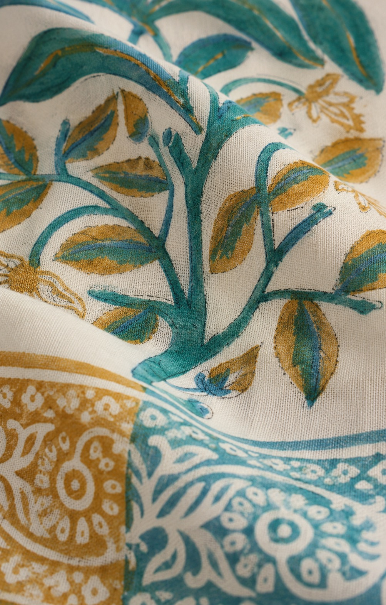
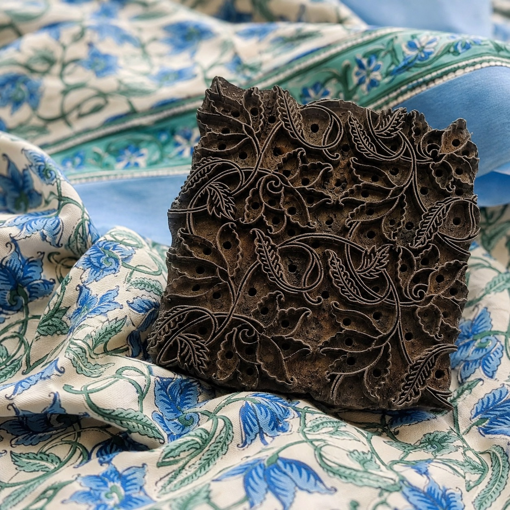

Yes, small variations in alignment, colour, and pressure are normal signs of authentic hand block printing. In handmade textiles, those subtle differences are often the clearest evidence that the fabric was printed by hand rather than produced by a machine.
In a world of digitally repeated patterns and industrially uniform surfaces, genuine block printing carries something rarer: the quiet trace of a human process. A slight overlap in a motif, a softer patch of colour, or a repeat that sits just a touch higher than the next can all point back to the artisan's hand.
For first-time buyers, these details can look like flaws. For textile makers, collectors, and informed buyers, they are usually part of what makes the fabric valuable. If you are learning how to identify real block printed fabric, these tiny irregularities are worth understanding.
Hand block printing is a traditional textile printing method in which artisans stamp carved wooden blocks onto fabric one impression at a time. Unlike digital or rotary printing, the repeat is built manually across the cloth, so each section depends on the conditions of that exact moment.
Every impression is influenced by:
That is why hand block printed fabric feels warmer and more dimensional than machine-made alternatives. If you'd like a broader introduction to the technique, read The Art of Hand Block Printing.
One of the most common buyer questions is simple: how can you tell whether a block print is really handmade? Ironically, the answer is often found in the slight inconsistencies that machines are designed to remove.
During block printing, the artisan places each carved block beside the previous impression by eye. Even a highly skilled printer cannot maintain machine-level registration across thousands of repeats. As a result, authentic fabrics may show tiny shifts in spacing, slight overlaps, or motifs that sit a fraction higher or lower than the next.
These are not defects in themselves. They are evidence of manual repeat placement and one of the clearest signs that the print was built by hand.
Fabric does not absorb dye in exactly the same way from one section to another. The pressure of the block, the amount of pigment on its surface, and even changes in humidity can create gentle tonal variation. In handmade printing, colour feels alive rather than flat.
That depth is difficult to fake convincingly. A perfectly even surface can look clean, but it often loses the visual richness that makes hand printed textiles feel personal.

Traditional printing uses hand-mixed dyes and manually prepared fabrics. Sometimes a block carries a little extra pigment. Sometimes the cloth absorbs colour unevenly through the fibre. That can create feathered edges, tiny bleeds, or softly irregular outlines that would be unusual in industrial printing.
These marks should remain subtle, but when they do, they often support the authenticity of the textile rather than undermine it.
Each block must be pressed firmly onto the cloth, and pressure naturally changes over long printing sessions. Some motifs may appear slightly darker, slightly lighter, or more textured than the next repeat. These shifts create visual depth and remind you that the surface was built through touch, not automated replication.
Handmade objects feel different because they hold evidence of time, concentration, movement, and judgement. A hand block printed textile is not just decorated fabric. It is a record of someone carving the block, mixing the colour, aligning the repeat, and printing the cloth with patience.
That is why handmade irregularity should not be confused with carelessness. The beauty lies in controlled variation: enough precision for the pattern to feel balanced, and enough natural difference for the textile to feel alive.

Not every inconsistency is a mark of quality. There is an important difference between natural handmade variation and weak execution. A well-made hand block print should still show skill, discipline, and finishing care.
Good handcrafted printing usually includes:
Major smudges, messy registration across the full width, or careless finishing are not what buyers should accept as handmade charm. At PEXX, protecting that balance between artisanal character and production discipline is part of what keeps craft intact at scale. You can read more in Keeping Craft Intact at Production Scale.
If you are comparing handmade textiles with machine-made imitations, use this quick checklist:
The more perfectly identical every repeat appears, the more likely the fabric was industrially produced.
Hand block printing survives because people continue to value authenticity, heritage, and the slower forms of skill that mass manufacturing tends to erase. These textiles preserve artisan knowledge, cultural continuity, and a visual language that feels human rather than synthetic.
For buyers, designers, and retailers, understanding these nuances leads to better sourcing decisions. For anyone who wants to experience the process more closely, PEXX also hosts block printing workshops and studio visits that bring the craft into view.
Yes. Small variations in alignment, colour, and pressure are natural signs of authentic handmade printing.
Not always. Minor irregularities are expected in handcrafted textiles, while large smudges or poor finishing may point to weak craftsmanship.
Hand block printing is done manually using carved wooden blocks, while digital printing is machine-controlled and produces highly uniform repeats.
They can imitate the style, but they usually lack the subtle depth, texture, and natural variation found in authentic handmade work.
Many people value their individuality, craftsmanship, and emotional connection to a process that is visibly made by human hands.